作者：创世魂
● 概述
通过本类可以创建MFC窗口程序，具体可看新手入门教程的操作流程。
本篇教程使用了菜单操作教程中讲解的知识。
● 创建主窗口
帮助文档如下图：
本方法共有5个参数，用于创建用户程序的主窗口。
参数1、2：提供主窗口左边和顶边的位置，忽略后则在默认位置显示。
参数3、4：提供主窗口宽度和高度、忽略后使用默认尺寸。
参数5：提供要显示的窗口菜单变量，忽略后不显示菜单。
注意：主窗口只能创建一个，并且建议在启动类中创建。
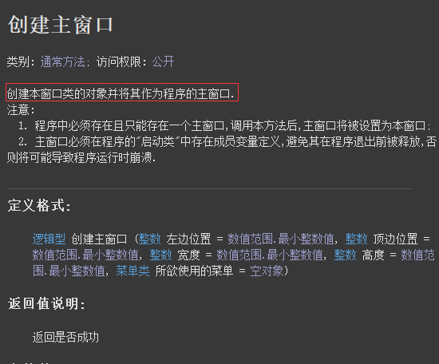
新建项目：
新建项目时选择“MFC窗口程序”会自动生成“创建主窗口”代码。
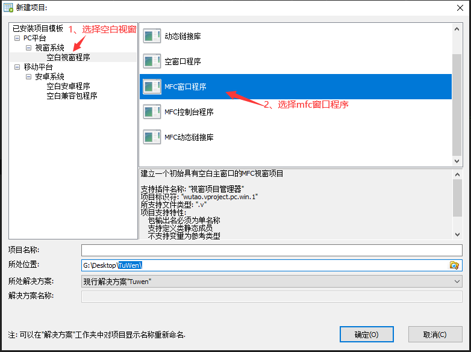
代码界面：
创建后自动生成启动类、主窗口类、主窗口变量以及“创建主窗口”方法。
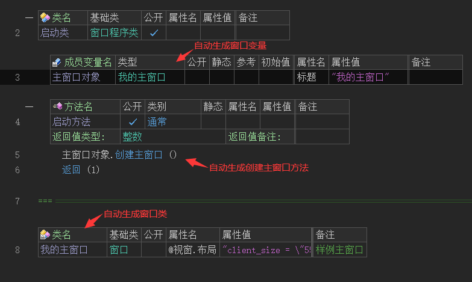
运行效果如下图：
默认窗口运行效果如下图,如果想使用菜单可看“菜单操作教程”
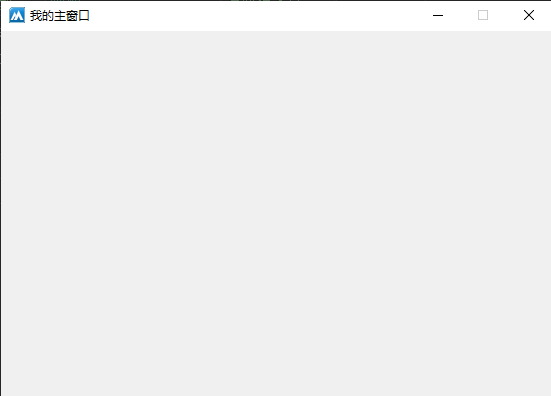
● 创建子窗口
帮助文档如下图：
通过本方法可创建一个子窗口，此窗口将会嵌入在主窗口内部，并不会弹出。
参数1：需要提供要嵌入的窗口对象，如果想在当前窗口嵌入，直接填写本对象即可。
参数2、3：提供位置参数，忽略后将使用默认参数。
参数4、5：提供尺寸信息，忽略后将使用默认尺寸。
参数6：提供菜单变量就可以使用。
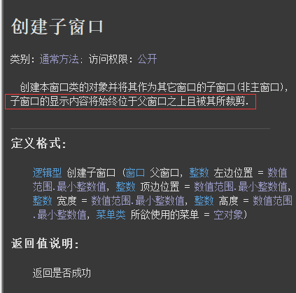
代码编写如下图：
1、首先定义一个子窗口类、可以打开设计器设计一下尺寸。
2、定义子窗口变量。
3、按钮点击后调用本方法创建子窗口。
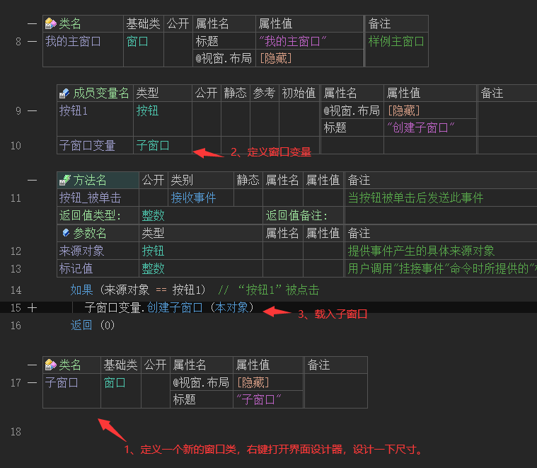
运行效果如下图：
当按钮点击后可以看到，在主窗口的内部出现了一个嵌入式的子窗口。
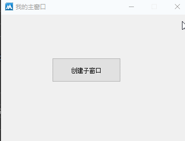
●创建对话框
“创建对话框”帮助文档如下图：
通过本方法可创建一个对话框窗口，进入对话框窗口后将无法操作其它窗口。
参数1：强制使用对话框风格后，弹出的窗口将只有一个关闭按钮。
参数2、3：调整窗口位置，忽略则使用默认位置。
参数4、5：提供窗口尺寸，忽略则使用默认尺寸。
参数6：如果需要菜单可通过本参数传递。
注意：本方法的返回值是由“关闭窗口()”方法返回。
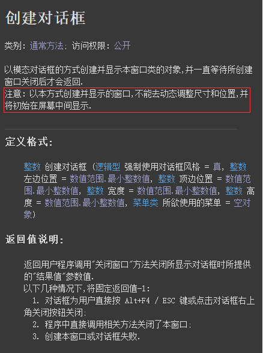
“关闭窗口”帮助文档如下图：
通过调用本方法可实现关闭窗口，提供的参数对话框系列窗口有效。
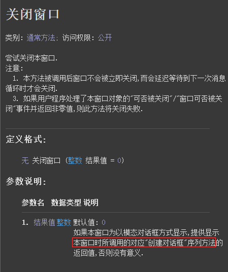
主窗口界面设计：
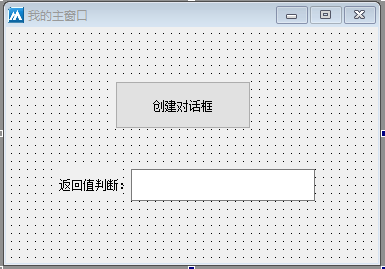
对话框窗口界面设计：
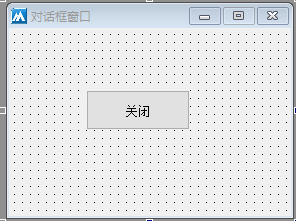
主窗口代码编写如下图：
1、定义对话框窗口变量。
2、按钮点击后创建对话框窗口，并判断返回值。
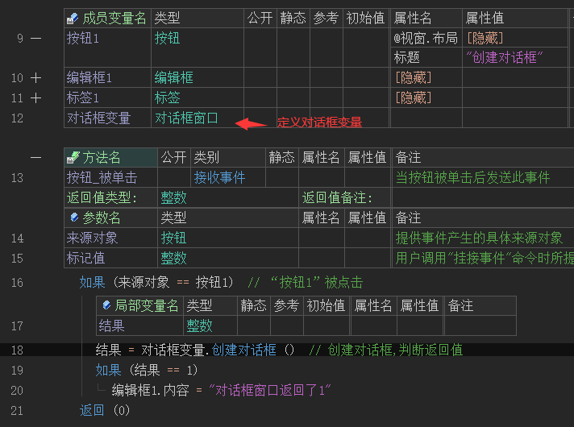
对话框窗口代码编写如下图：
按钮点击后调用“关闭窗口”传递参数1.
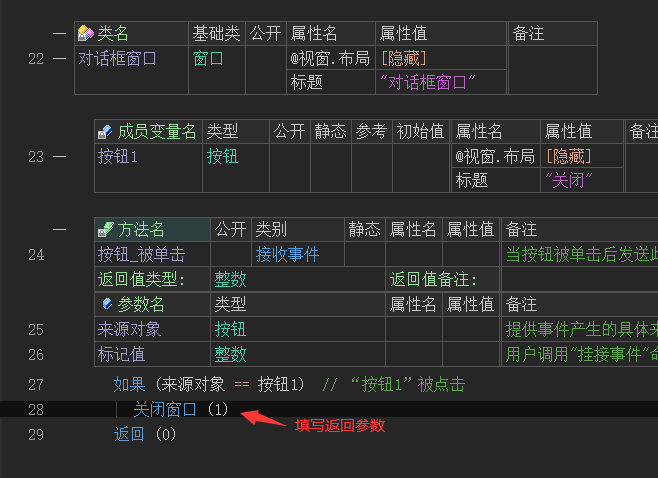
运行效果如下图：
最终主窗口编辑框会显示对应内容。
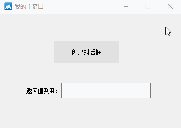
● 创建弹出子窗口
帮助文档如下图：
通过本方法可创建一个弹出子窗口，本窗口与弹出子窗口的区别是，本窗口不会嵌入到父窗口内部。
并且弹出窗口后，依然可以操作父窗口内容。
参数1：提供父窗口对象，如果当前窗口是父窗口提供“本对象”即可。
参数2、3：调整窗口位置，忽略则使用默认位置。
参数4、5：提供窗口尺寸，忽略则使用默认尺寸。
参数6：如果需要菜单可通过本参数传递。
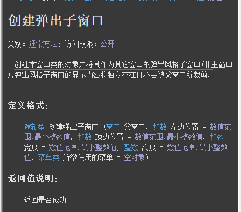
代码编写如下图：
1、定义弹出子窗口类。
2、在主窗口中定义弹出子窗口变量。
3、按钮点击调用本方法弹出子窗口。
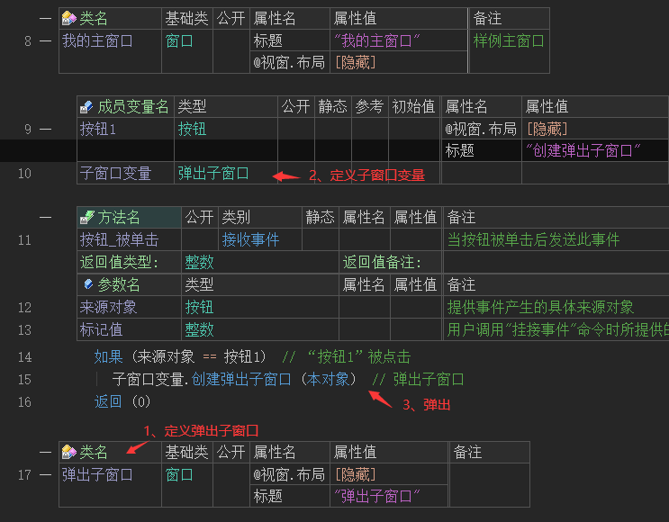
运行效果如下图：
最终可以看到当子窗口弹出后，依然可以操作主窗口，并且还是已对话框的形式展示。
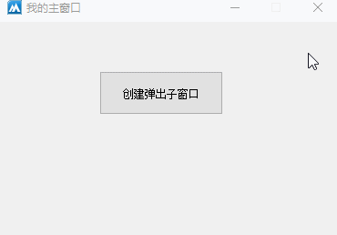
● 创建有菜单主窗口
帮助文档如下图：
通过本方法可创建主窗口，与“创建主窗口”的区别是直接提供菜单类名就可以使用菜单。
而“创建主窗口”需要提供菜单变量才能使用。
参数1、4分别提供窗口位置和尺寸信息，忽略则使用默认值。
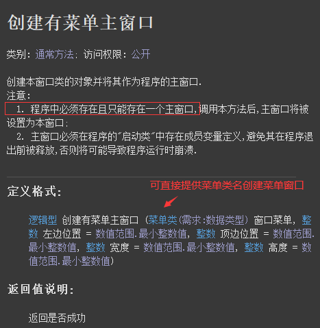
菜单设计如下图：
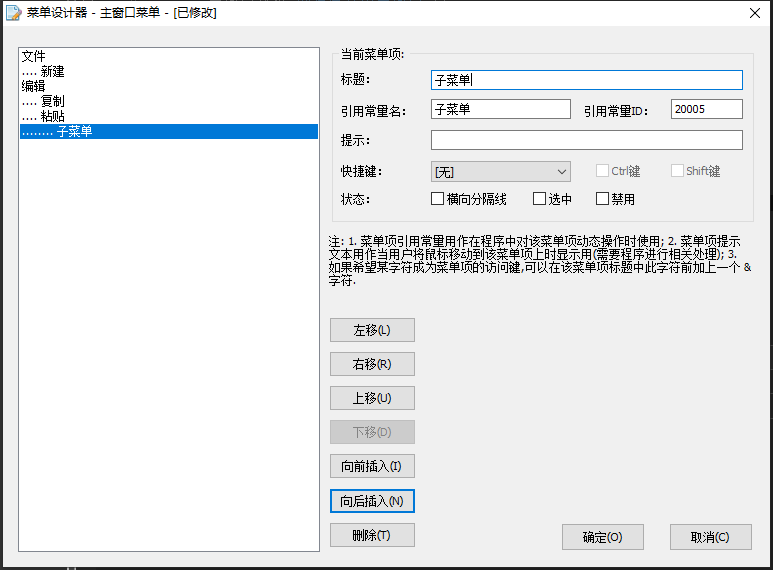
代码编写如下图：
直接将菜单的类名填入本方法的参数中即可。
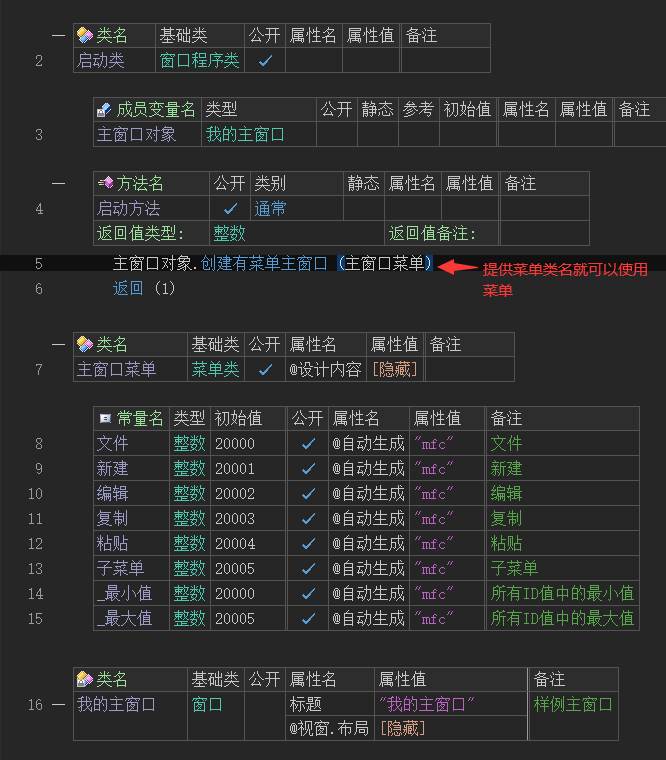
运行效果如下图：
主窗口运行后可以在窗口的顶部位置出现菜单。
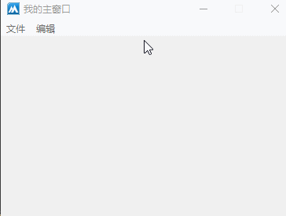
● 创建有菜单对话框
帮助文档如下图：
通过本方法可创建一个有菜单的对话框窗口。
与普通对话框窗口的区别是，本方法可直接传递菜单类名使用菜单。
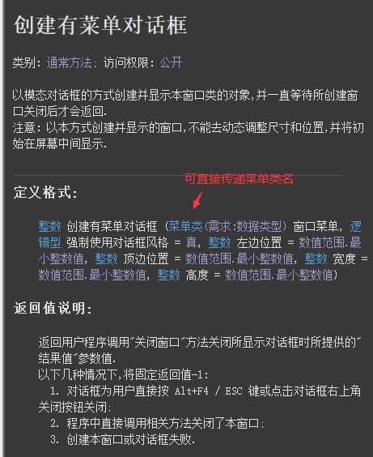
界面设计如下图：
在窗口中放一个按钮和编辑框。
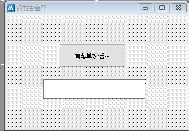
代码编写如下图：
1、首先设计个菜单。
2、定义一个新的窗口类。
3、在主窗口中定义窗口变量。
4、按钮点击后调用本方法载入一个带菜单的窗口。
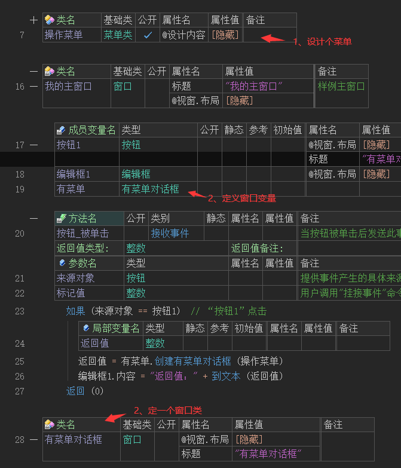
运行效果如下图：
最终可看到弹出的窗口中存在菜单。
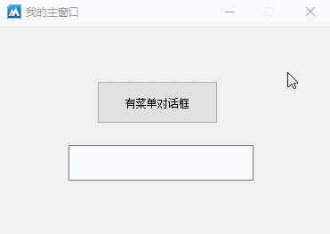
●创建窗口
帮助文档如下图：
通过本方法可以创建一个普通窗口，与其他窗口的区别在于，本窗口没有子父区别，可以相互覆盖。
参数1、4：提供窗口位置和尺寸，忽略则使用默认值。
参数5：提供要使用的菜单，忽略则不显示。
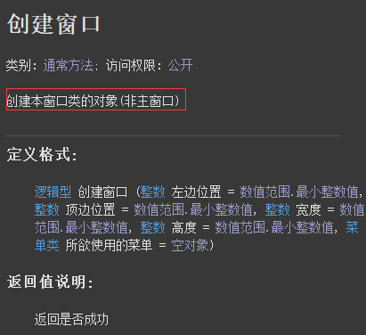
代码编写如下图：
1、定义普通窗口类。
2、在主窗口中定义普通窗口变量。
3、按钮点击后创建普通窗口。
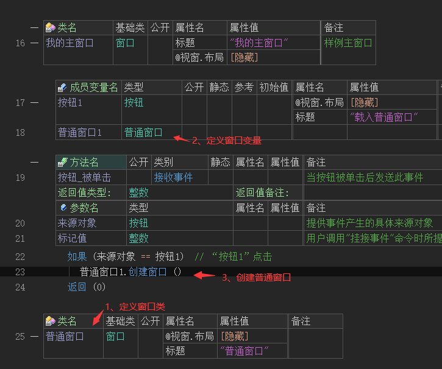
运行效果如下图：
在普通窗口弹出后，主窗口和普通窗口可以随意的相互覆盖，不存在任何子父关系。
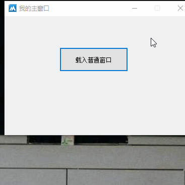
● 创建有菜单窗口
帮助文档如下图：
本方法与“创建窗口”的区别是，本方法可以直接使用菜单类名来载入菜单。
参数1、4：用于设置位置和尺寸信息，忽略采用默认尺寸。
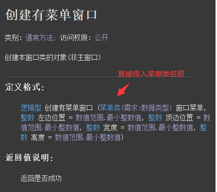
代码编写如下图：
1、设计一个菜单。
2、定义有菜单窗口类。
3、在主窗口中定义菜单变量。
4、按钮点击后载入有菜单窗口。
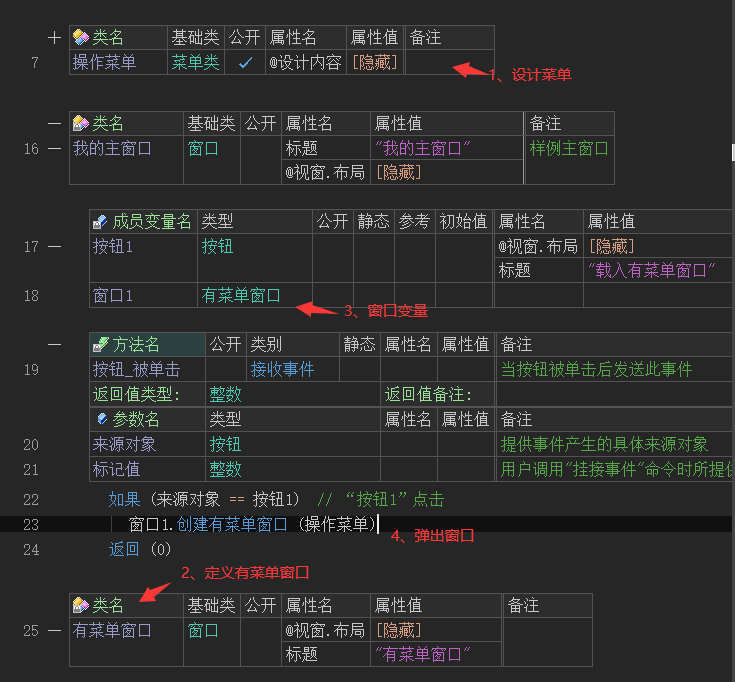
运行效果如下图：
可以看到当窗口载入后，窗口上会有菜单。
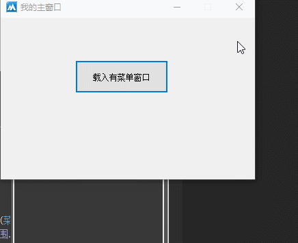
● 置为主窗口
帮助文档如下图：
通过本方法可设置当前窗口为主窗口，可用于主窗口切换。
注意：如果想要进行主窗口切换，必须将被切换的窗口定义在启动类中，防止窗口被释放。
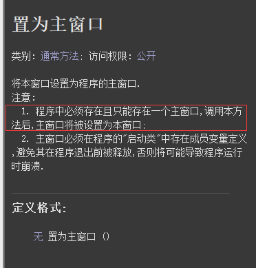
代码编写如下图：
1、定义子窗口类，子窗口按钮点击后设置当前窗口为主窗口。
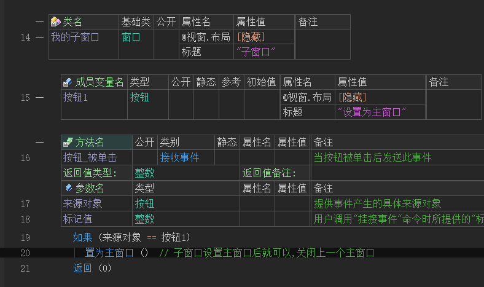
2、在启动类中定义子窗口变量，并公开。
3、主窗口创建完毕后载入子窗口，用于同时显示两个窗口。
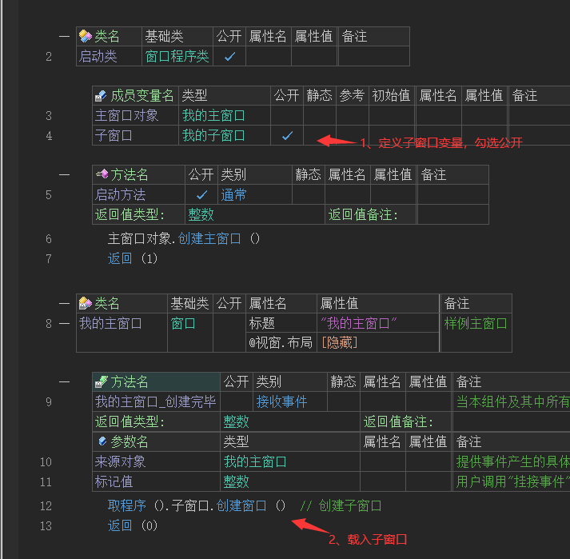
运行效果如下图：
下图是子窗口没设置主窗口时，如果关闭主窗口整个程序都会退出。
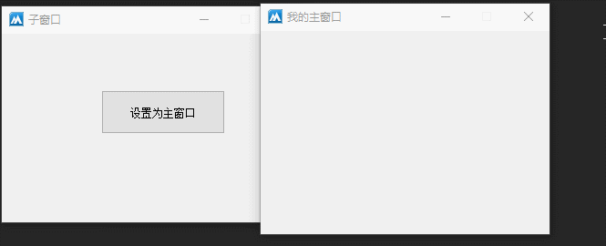
下图是子窗口设置主窗口后，如果关闭主窗口程序不会退出。
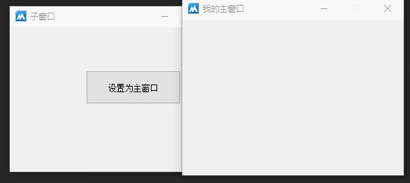
● 置外形图片
帮助文档如下图：
通过本方法可以将图片外形设置成窗口的外形，从而改变窗口的形状。
参数1：提供要设置的图片。
参数2：提供要透明部分的颜色，例如：设置白色后白色将进入透明状态，其它非白色区域将会设置成窗口外形。
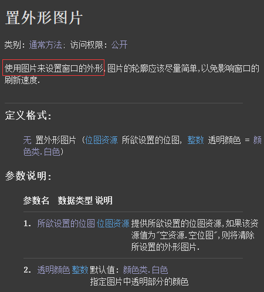
准备一张简单的黑白图：
代码编写如下图：
按钮点击后，调用本方法设置准备好的黑白图，并将透明部分设置白色。
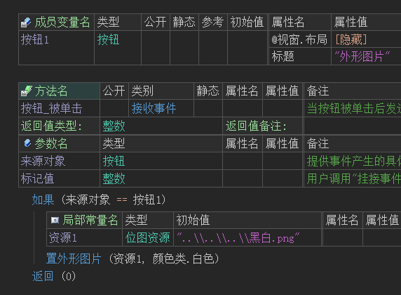
运行效果如下图：
最终窗口外形将会按照黑色区域显示。
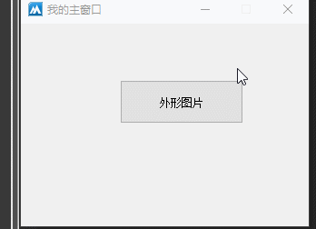
● 置实例菜单
帮助文档如下图：
通过本方法可动态设置窗口菜单，参数需要提供菜单变量。
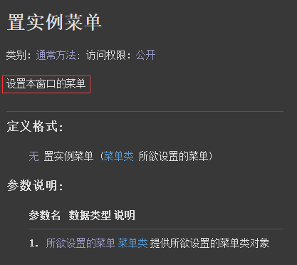
代码编写如下图：
1、首先设计个菜单。
2、在主窗口中定义菜单变量。
3、按钮点击后，调用本方法显示设计的菜单。
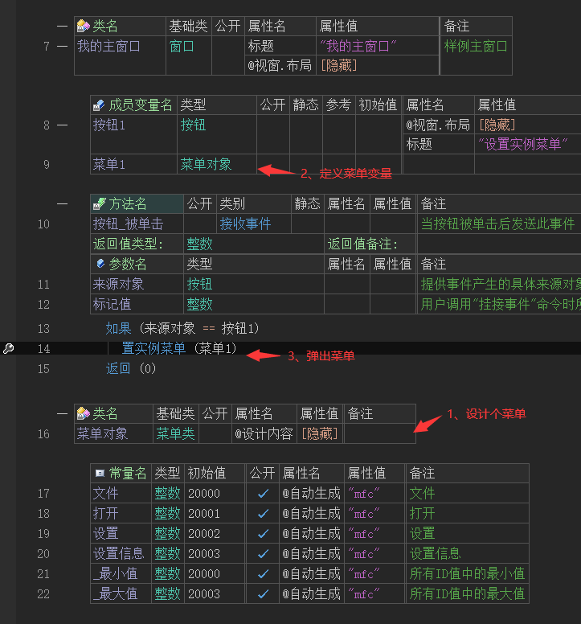
运行效果如下图：
最终菜单会显示在窗口上。
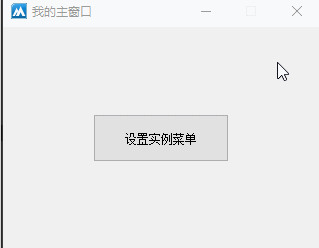
● 置菜单
帮助文档如下图：
本方法和置实例菜单的区别是，本方法的参数可直接提供菜单类名。
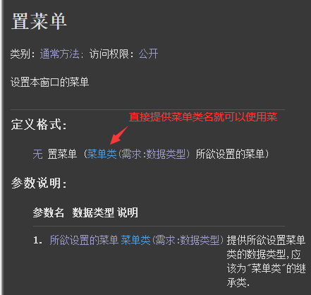
代码编写如下图：
按钮点击后，直接提供菜单类名即可设置菜单。
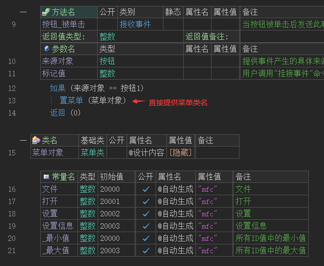
运行效果如下图：
最终可以看到，窗口菜单被显示。
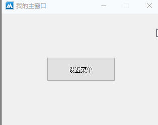
●置托盘图标
帮助文档如下图：
通过本方法可以在系统托盘中设置一个程序图标，格式必须为ico格式。
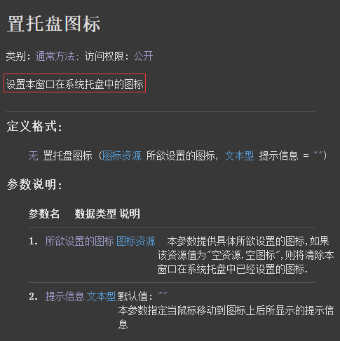
代码编写如下图：
1、定义一个局部常量，类型填写“图标资源”，初始值选择一个ico格式图片。
2、将定义好的图标资源常量，填入本方法的参数1中。
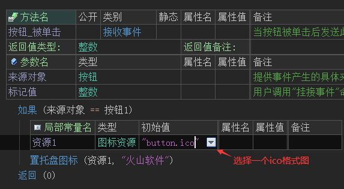
运行效果如下图：
当按钮点击后，系统托盘中会出现被选择的图标。
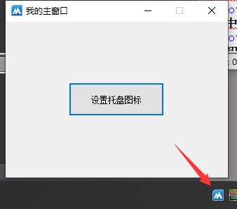
● 重置菜单
帮助文档如下图：
通过本方法可将菜单设置成初始状态。
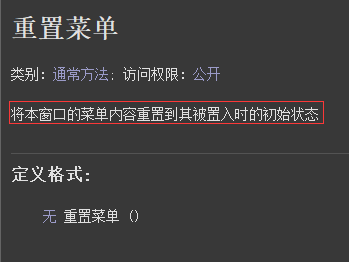
代码编写如下图：
1、设计一个菜单。
2、在主窗口中定义菜单变量。
3、在主窗口创建完毕事件下设置菜单。
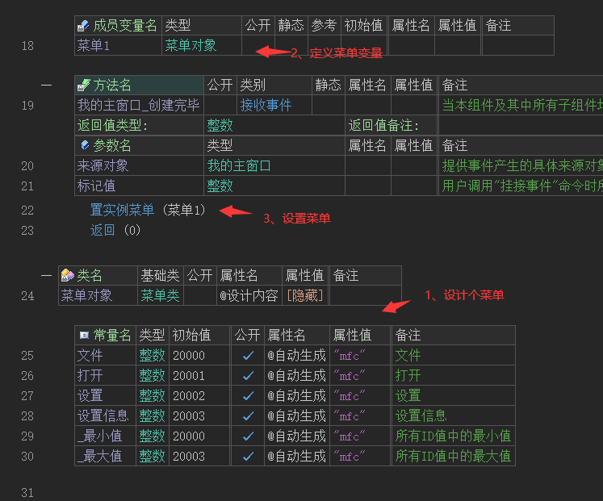
4、按钮1点击后重置菜单、按钮2点击后修改菜单标题。
运行效果如下图：
最终可看到当重置按钮被点击后，菜单会恢复初始状态。
● 取菜单
帮助文档如下图：
通过本方法可取出窗口上被设置的菜单对象，取出后可对菜单进行操作。
代码编写如下图：
1、在主窗口创建完毕时设置菜单。
2、按钮点击后取出菜单，并修改菜单标题。
运行效果如下图：
最终可以看到菜单标题被成功修改。
●清除菜单
帮助文档如下图：
通过本方法可以将窗口菜单删除。
代码编写如下图：
1、窗口创建完毕后设置菜单。
2、按钮点击后调用本方法清除菜单。
运行效果如下图：
最终可以看到菜单被删除。
● 置底图数据
帮助文档如下图：
通过本方法可以给窗口设置字节集背景图。
注意：本方法继承自“组件布局器”。
代码编写如下图：
按钮点击后利用“读入文件()”方法读取一个图片设置窗口底图。
运行效果如下图：
最终可看到底图被改变。
● 置底图文件
帮助文档如下图：
本方法可直接设置图片文件为窗口底图。
注意：必须保证提供的文件是图片格式。
代码编写如下图：
按钮点击后调用本方法设置窗口底图。
运行效果如下图：
最终可看到窗口底图被改变。
● 创建完毕(事件)
以上几个事件可用于判断窗口启动顺序，这里统一讲解。
“创建完毕”帮助文档如下图：
当窗口内的所有子组件创建完毕时会触发本事件。
这其中也包括分组框等容器组件内的子组件。
注意：本事件只会触发一次。
“被显示”帮助文档如下图：
当窗口被显示后会触发本事件。
注意：本事件如果当窗口隐藏后，显示窗口时还会触发。
“被激活”帮助文档如下图：
当窗口被激活时会触发本事件。
注意：当窗口获得焦点后，也会触发本事件，因此本事件可重复触发。
“首次激活”帮助文档如下图：
本事件在首次激活时会触发，并且只会触发一次。
在此事件下可以操作画板组件。
代码编写如下图：
依次添加事件输出内容到编辑框组件中。
运行效果如下图：
最终可以在编辑框中看到窗口正确的启动顺序。
● 位置被改变(事件)
帮助文档如下图：
当窗口位置被改变时会触发本事件。
代码编写如下图：
添加“位置被改变”事件，输出窗口左边和顶边的位置到编辑框中。
运行效果如下图：
最终移动窗口时编辑框内容会实时更新改变，证明事件被触发。
● 将被销毁(事件)
帮助文档如下图：
当窗口将被销毁时触发本事件。
注意：本事件继承自“组件布局器”。
代码编写如下图：
添加本事件后弹出一个信息框。
运行效果如下图：
当窗口点击关闭按钮后，信息框被弹出，证明事件被触发。
● 尺寸被改变(事件)
帮助文档如下图：
当窗口尺寸被改变时会触发本事件。
注意：本事件继承自组件布局器。
界面设计如下图：
在窗口中添加一个按钮和编辑框。
代码编写如下图：
1、按钮点击后修改窗口尺寸。
2、添加尺寸被改变事件，取出窗口尺寸。
运行效果如下图：
最终可以看到当窗口尺寸发生改变后，窗口尺寸会显示在编辑框中，证明事件被触发。
● 被隐藏(事件)
帮助文档如下图：
当窗口被隐藏时会触发本事件。
注意：本事件继承自“组件布局器”。
代码编写如下图：
1、首先在启动类中公开主窗口变量。
2、按钮点击后，隐藏主窗口。
3、添加被隐藏事件，显示一个信息框。
运行效果如下图：
最终可看到当按钮点击后会弹出信息框，证明事件被触发。
之所以窗口没有立刻隐藏，是因为信息框会阻塞隐藏方法的执行，信息框结束后会自动隐藏。
● 位置限制(事件)
帮助文档如下图：
通过本事件可对窗口进行尺寸或窗口位置限制。
注意：本事件必须设置返回1才能开启限制。
代码编写如下图：
1、添加“位置限制”事件，并限制最小宽度220像素。
2、按钮点击后设置窗口宽度为200，并且读取宽度到按钮标题上。
运行效果如下图：
最终可看到窗口尺寸被改变后，实际读取的尺寸是220像素，证明尺寸限制成功。
● 可否被关闭(事件)
帮助文档如下图：
当窗口将被关闭时会触发本事件，本事件返回1表示不允许关闭，返回0允许关闭。
代码编写如下图：
在主窗口中添加本事件，并弹出一个带是否按钮的信息，判断按钮点击后从而决定是否关闭软件。
运行效果如下图：
最终可看到只有点击“是”钮后才会关闭软件。
● 命令被选中（事件）
帮助文档如下图：
当鼠标移动到菜单上方时会触发本事件，命令代码参数可用于判断是哪个菜单项。
代码编写如下图：
1、简单的设计一个菜单，并设置菜单提示。
2、定义成员菜单变量。
3、在窗口创建完毕后设置菜单。
4、添加命令被选中事件，并取出菜单提示。
运行效果如下图：
最终可看到当鼠标经过菜单项目时，窗口标题被改变，证明命令被选中事件被触发。
● 对话框已初始化(事件)
帮助文档如下图：
当对话框窗口初始化完毕后，会触发本事件。
注意：本事件只对对话框窗口有效。
代码编写如下图：
1、定义一个对话框窗口类，并添加“对话框已初始化”事件弹出信息框。
2、在主窗口中定义对话框变量。
3、主窗口按钮点击后创建对话框窗口。
运行效果如下图：
最终信息框被弹出，证明对话框事件被触发。
● 托盘事件(事件)
帮助文档如下图：
当托盘图标被点击后触发本事件。
通过参数可判断是左键点击还是右键点击。
代码编写如下图：
1、窗口创建完毕后设置托盘图标。
2、添加本事件判断操作类型并调试输出信息。
运行效果如下图：
最后当软件托盘图标被点击后，火山输出栏会输出对应文本，证明事件被触发。
● 接收到命令(事件)
帮助文档如下图：
通过本事件可判断菜单被点击。
代码编写如下图：
1、设计一个菜单.
2、窗口创建完毕后设置窗口菜单。
3、添加本事件判断菜单点击。
运行效果如下图：
最后菜单被点击后会弹出信息框。
● 被取消激活(事件)
帮助文档如下图：
当窗口被取消激活时将触发本事件，例如：多窗口交互时点击其它窗口本事件就会触发。
代码编写如下图：
1、定义一个子窗口。
2、在主窗口中定义子窗口变量。
3、主窗口创建完毕后，创建子窗口。
4、添加被取消激活事件，修窗口标题。
运行效果如下图：
当子窗口被点击后，主窗口标题被修改，证明当前事件被触发。
● ESC关闭(读写)
帮助文档如下图：
通过本属性可设置窗口是否支持按下ESC关闭窗口。
提供真则可以按下esc按键关闭窗口，提供假则不能。
注意：如果忽略本属性，默认则为真。
代码编写如下图：
在主窗口类的属性栏设置本属性为真。
运行效果如下图：
当按下esc按键后，窗口将关闭。
● 位置(读写)
帮助文档如下图：
通过本属性可用于读取当前窗口位置信息，同名的写属性可设置位置信息。
代码编写如下图：
按钮点击后判断窗口位置是哪种类型。
运行效果如下图：
最终可看到窗口的默认类型是“通常”类型。
● 保持标题条激活(读写)
帮助文档如下图：
通过本属性可设置标题条一直处于激活状态，默认为假，不保持激活。
代码编写如下图：
在窗口类的属性栏即可设置本属性。
运行效果如下图：
当本属性为假时，切换窗口焦点时可看到标题条会发生变化。
当本属性为真时，窗口焦点切换时标题条会始终处于激活状态。
● 可否移动(读写)
帮助文档如下图：
通过本属性可设置鼠标点击拖动标题栏时，是否同时移动窗口。
注意：本属性默认值为真。
代码编写如下图：
直接在窗口类的属性栏设置本属性即可。
运行效果如下图：
如果属性值为假，则点击标题栏不能拖动窗口。
当属性为真或者不提供属性时，都可以点击标题栏拖动窗口。
● 随意移动(读写)
帮助文档如下图：
通过本属性可设置当前窗口是否支持任意位置点击移动。
注意：当设置本属性为真后，窗口上所有不支持输入焦点的组件将不能接收到鼠标左键被按下和被放开事件。
代码编写如下图：
在窗口类的属性栏中设置即可。
运行效果如下图：
设置本属性为真后，点击窗口任意区域都可以进行窗口移动。
设置为假后，将不支持任意位置移动。
● 外形(读写)
帮助文档如下图：
通过本方法可以设置窗口外形，属性值调用方式“串口外形类型.XXX”.
代码编写如下图：
如果在窗口类属性栏中设置，直接下拉选择即可。
运行效果如下图：
圆角矩形效果会很丑，这是因为mfc组件本身的问题。
● 总在最前(读写)
帮助文档如下图：
通过本属性可以将当前程序窗口设置在电脑所有软件的最前面。
当操作其它软件时，其它软件不会覆盖当前软件。
代码编写如下图：
直接在窗口类的属性栏中设置本属性即可。
运行效果如下图：
当属性值为真时，操作其它软件不会覆盖当前软件。
当属性值为假时，操作其它软件会覆盖当前软件。
● 控制按钮(读写)
帮助文档如下图：
通过本属性可设置当前窗口是否具有控制按钮，即窗口右上角的三个按钮。
代码编写如下图：
直接在窗口类的属性栏设置本属性即可。
运行效果如下图：
当属性值为真或者忽略属性时右上角都会显示控制按钮。
当属性值为假时，右上角将没有控制按钮，并且软件图标也不会显示。
● 最大化按钮(读写)
帮助文档如下图：
通过本属性可以设置最大化按钮是否可以点击，从而控制程序进行最大化操作。
注意：本属性只有当“控制按钮=真”时有效。
代码编写如下图：
直接在窗口类的属性栏设置本属性即可。
运行效果如下图：
当属性值为真时，可以看到最大化按钮处于可点击状态。
当属性值为假时，最大化按钮会变成灰色不可点击。
● 最小化按钮(读写)
帮助文档如下图：
通过设置本属性可绝对是否显示最小化按钮。
注意：只有当“控制按钮”属性值为真时有效。
代码编写如下图：
直接在窗口类属性栏中设置即可。
运行效果如下图：
当属性值为真时，最小化按钮处于可点击状态。
当属性值为假时，则只会剩下关闭按钮。
● 窗口边框(读写)
帮助文档如下图：
通过本属性可设置窗口边框效果。
代码编写如下图：
直接在窗口类属性栏中设置即可，此处设置为“镜框式可调边框”。
运行效果如下图：
设置为“镜框式可调边框”后，鼠标点击窗口边角区域可以对窗口尺寸进行自由调整。
● 底图方式(读写)
“底图方式”帮助文档如下图：
通过本属性可设置底图放置方式，调用方式：“图片放置方式.XXX”.
注意：本属性继承自组件布局器。
“底图”帮助文档如下图：
通过本属性可设置窗口底图，属性值为位图资源。
注意：本属性继承自组件布局器。
代码编写如下图：
1、在窗口类的属性栏中设置底图。
2、按钮点击后设置底图方式为缩放图片。
运行效果如下图：
最终按钮点击后，窗口底图会缩放填充整个软件界面。
● 底色(读写)
帮助文档如下图：
通过本属性可设置窗口底色。
属性值可以使用“颜色类”中定义的常量值，例如：“颜色类.白色”或者“0xFFFFFF”十六进制颜色值。
注意：本属性实际继承自组件布局器。
代码编写如下图：
按钮点击后设置窗口颜色为红色。
运行效果如下图：
最终窗口将修改成红色。
● 消息过滤(虚拟)
帮助文档如下图：
通过本虚拟方法可以进行消息拦截操作。
代码编写如下图：
1、在窗口类上按钮可添加本虚拟方法。
2、添加后判断来源组件，并弹出消息值。
运行效果如下图：
最终按钮组件所有的消息值会显示在信息框中。
代码编写如下图：
修改代码，判断消息值等于15后在显示信息框。
运行效果如下图：
最终弹出的信息框只会有显示15,其它的消息都不会显示出来。